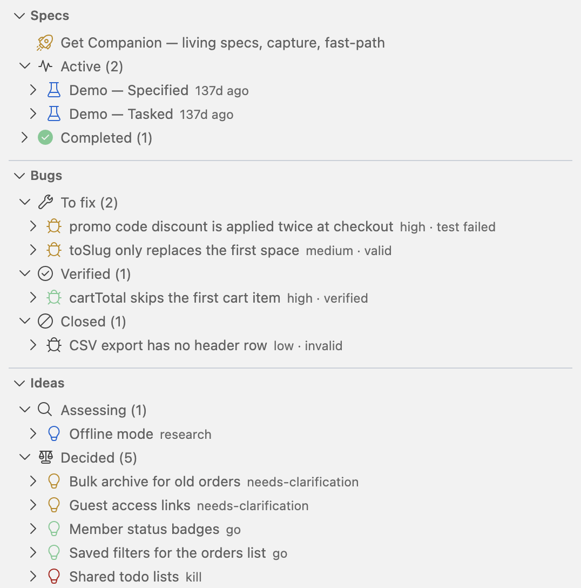
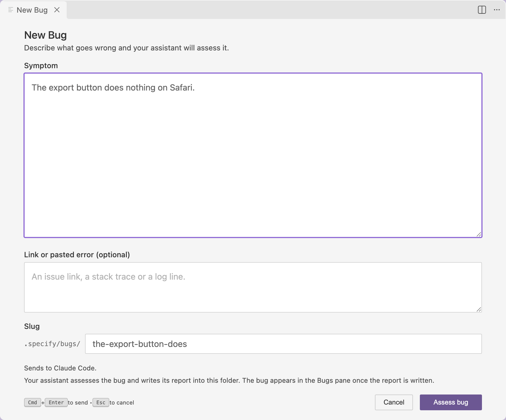
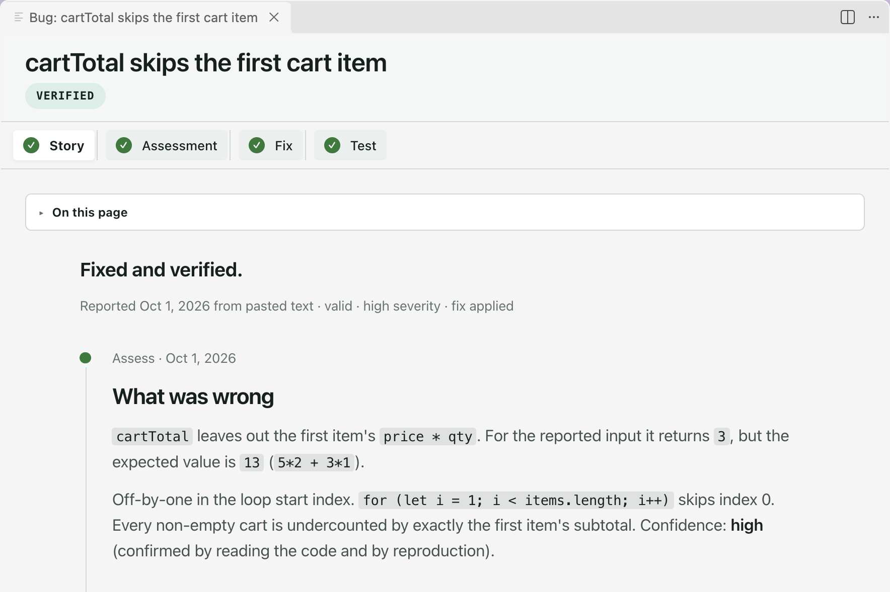
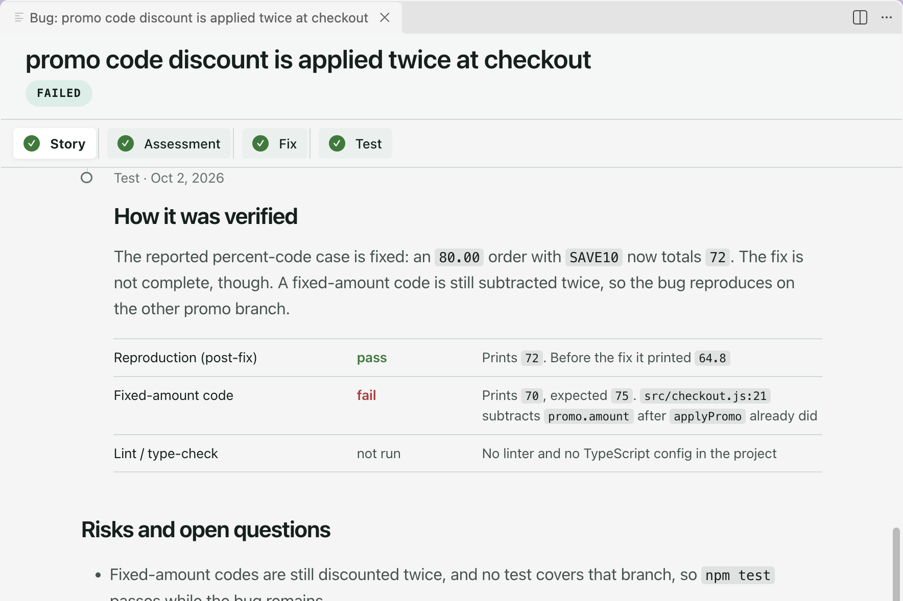

Bugs get their own pane, sorted by where they stand.
Describe what goes wrong. Your assistant assesses it.
One page tells it in order: story, assessment, fix, test.
What was wrong, in plain words, with the evidence.
And when a fix does not hold, the story says which check failed.
speckit-companion.dev